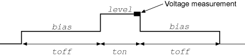

|
|
|
PulseIMeasureV()
This KIPulse factory script function performs a specified number of pulse I, measure V cycles.
Type |
TSP-Link accessible |
Affected by |
Where saved |
Default value |
Function |
No |
|
|
|
Usage
PulseIMeasureV(smu, bias, level, ton, toff, points)
smu |
System SourceMeter® instrument channel (set to |
bias |
Bias level in amperes |
level |
Pulse level in amperes |
ton |
Pulse on time in seconds |
toff |
Pulse off time in seconds |
points |
Number of pulse-measure cycles |
Details
Data for pulsed voltage measurements, current levels, and timestamps are stored in smua.nvbuffer1.
If any parameters are omitted or nil
To perform the specified number of pulse I, measure V cycles, this function:
1. Sets the smu to output bias amperes and dwell for toff seconds.
2. Sets the smu to output level amperes and dwell for ton seconds.
3. Performs voltage measurement with source at level amperes.
4. Sets the smu to output bias amperes for toff seconds.
5. Repeats steps 2 through 4 for all remaining points pulse-measure cycles.

Example
PulseIMeasureV(smua, 0.001, 0.01, 20e-3, 40e-3, 10) |
SMU A will output 1 mA and dwell for 40 ms, output 10 mA and dwell for 20 ms. The voltage measurements occur during each 20 ms dwell period. After the measurement, the output will return to 1 mA and dwell for 40 ms. This pulse‑measure process will repeat nine more times. |
Also see
None
Copyright (c) 2007-2012, Keithley Instruments, Inc. All rights reserved.